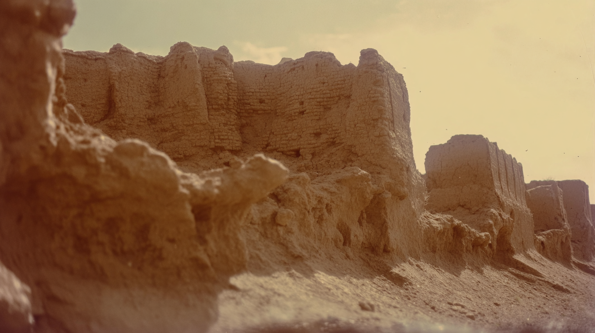
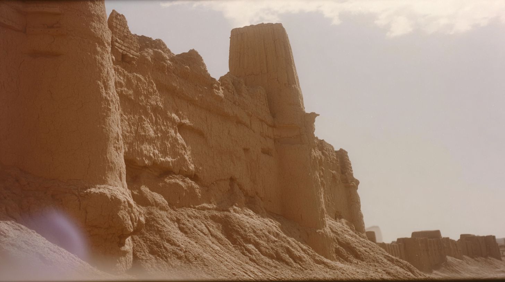
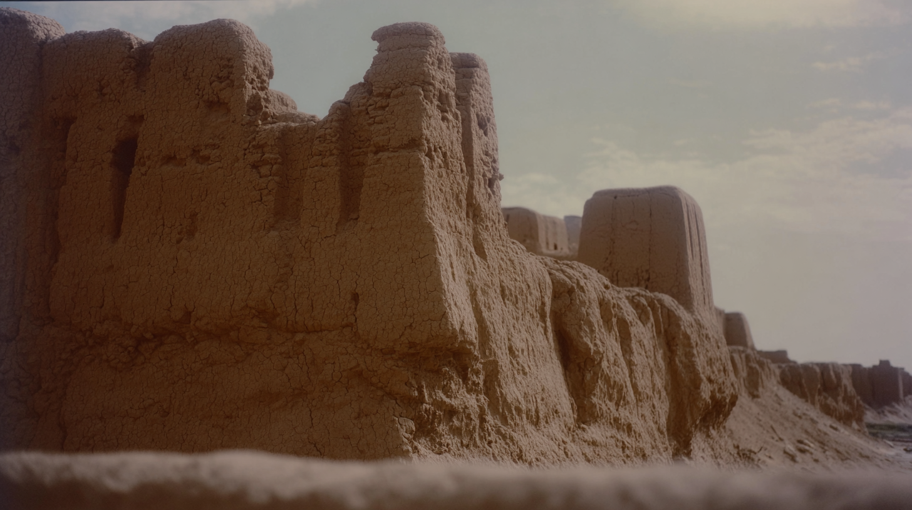
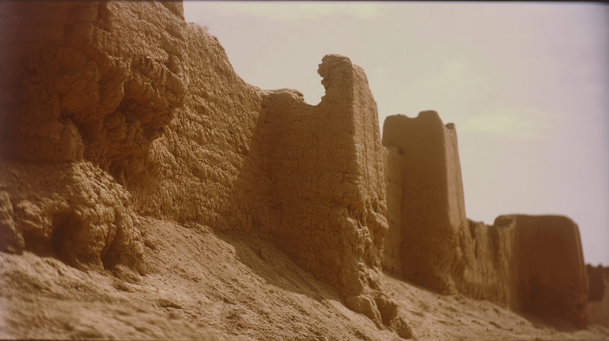

A close, low-angle view of the crumbling mud-brick fort walls rising from the sand, their rough, sun-baked texture glowing softly beneath a pale, hazy sky.
The towering earthen ramparts stretch upward in warm afternoon light, the camera positioned near the base to emphasize their scale against the washed-out desert sky.
Thick, weathered battlements line the ridge in a muted cinematic haze, their cracked surfaces catching gentle highlights as the desert slopes away below.
extreme close up of aspects of ancient mud-brick desert fort filling the frame, seen from near ground level, subtle motion blur as if shot from a slowly passing vehicle, vintage analog film, eroded textures/ surface, vintage blur
crumbling edges and sun-scorched surfaces, realistic texture, very fine dimpled film, muted sandy browns and sun-faded tones, low contrast color grading, soft highlights with gentle bloom, hazy dry air, dust suspended in warm light, pale sunlit sky, soft reflected light on rough clay surfaces, light film grain, organic texture, slight analog age patina, low digital sharpness, natural depth, intimate and observational, emotionally present, shot like contemporary cinema remembering a place, realistic.